GreenXpoLog
Multiplatform Attendance & Follow-Up Suite for GreenLand's HomeX and Ceramica Market exhibitions — co-located, four-day run
Admin Workspace

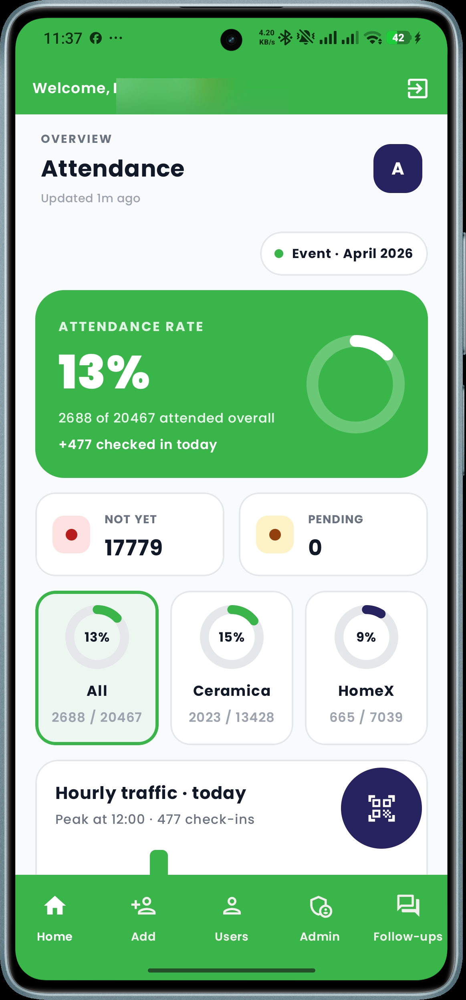
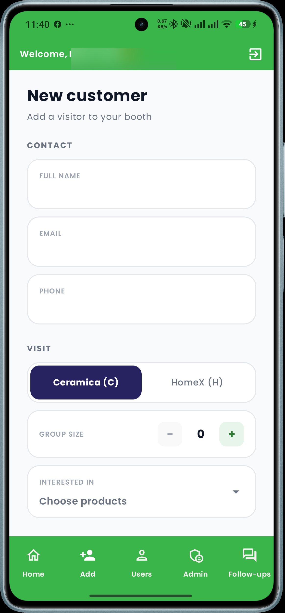
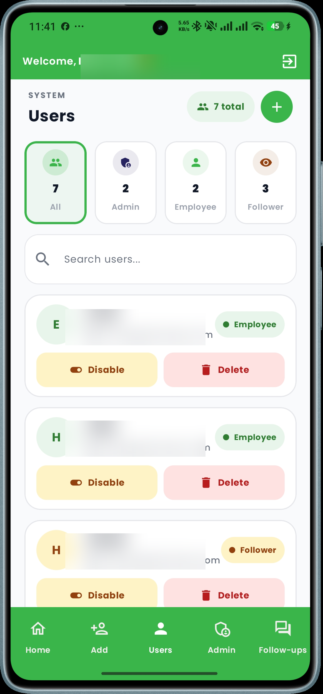
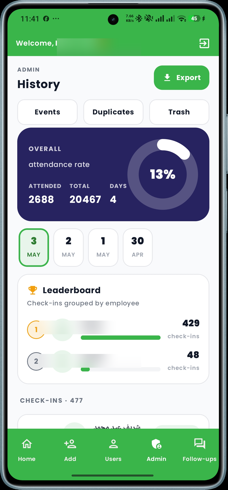
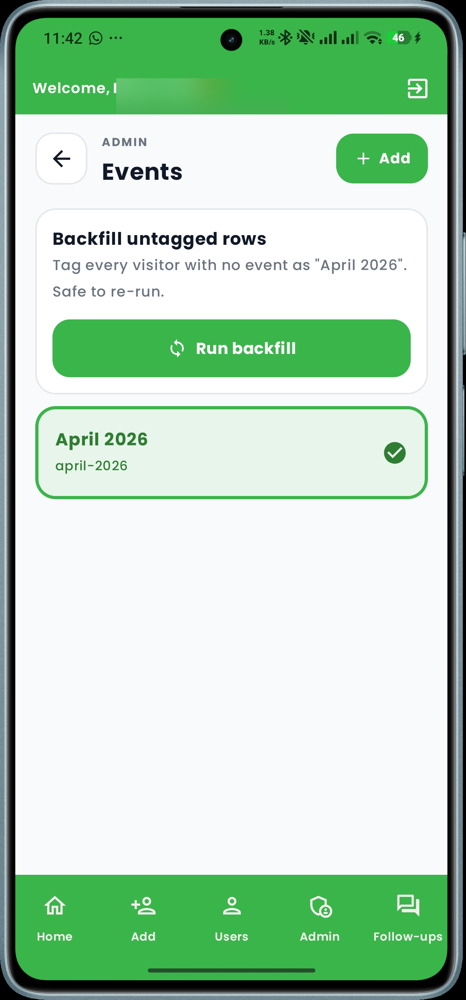
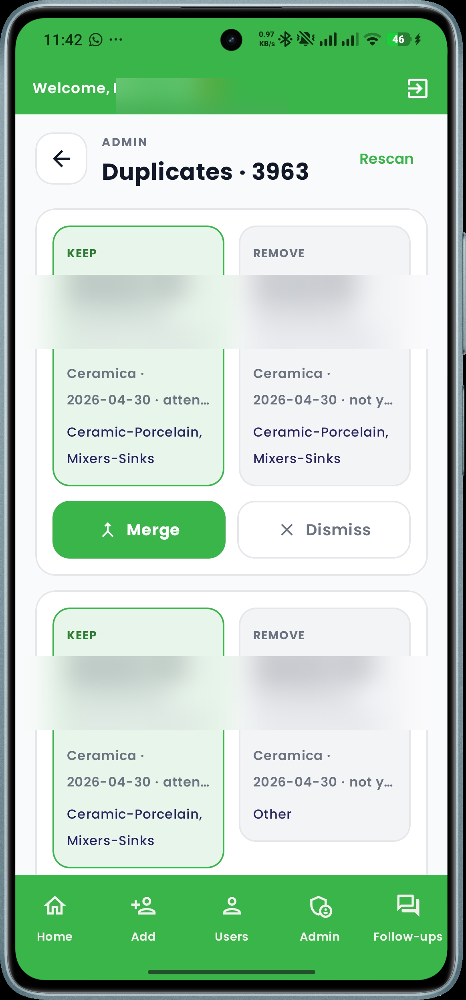
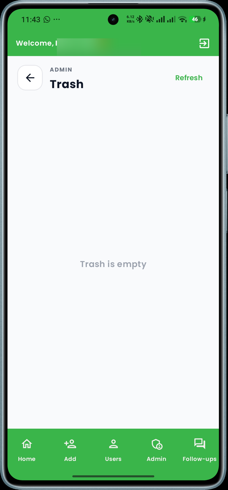
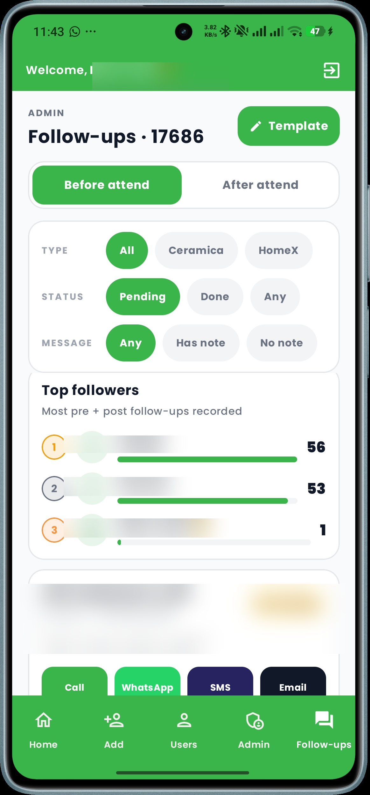
Follower Workspace

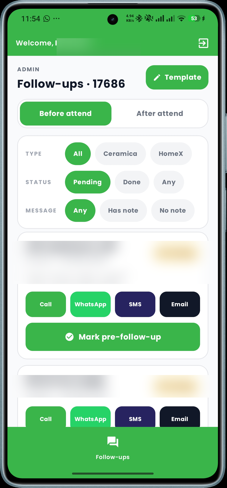
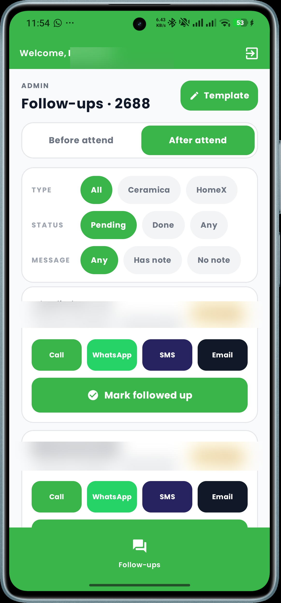
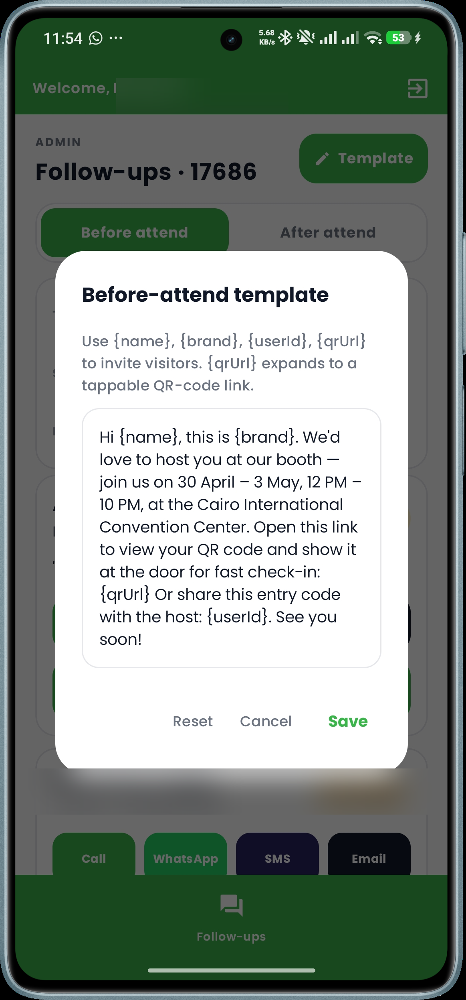
The Vision
GreenXpoLog is a single Kotlin Multiplatform suite — Android, iOS, and Desktop — that runs the entire visitor lifecycle for two co-located exhibitions hosted by GreenLand: HomeX (tagged H) and Ceramica Market (tagged C). Both run at the same venue over the same four-day window, and a single visitor can be registered against either exhibition (or both). The app handles on-site QR registration and attendance, all the way through post-event follow-up and bulk WhatsApp messaging. The full backend was built in-house with Spring Boot exposing a versioned REST API, hosted on a managed cloud platform, and consumed by every client through Ktor.
Three Roles, One App
Admin — full visibility across both the HomeX (H) and Ceramica Market (C) databases, attendance history with date and event filters, soft-delete with a recoverable Trash, a Duplicates tool that flags repeated phones/emails across both exhibitions, and a Follow-Up board to assign and audit post-event outreach.
Employee — the on-floor scanner. Search by QR, phone, email, or name; mark attendance in one tap; register walk-ins with a draft that syncs once connectivity returns; and send the visitor a personalized WhatsApp message straight from the profile sheet.
Follower — a restricted role purpose-built for the post-event call team. Sees only the Follow-Up tab with a curated list of attendees who still need outreach, can mark "pre-followed-up" / "followed-up" with a timestamped audit trail, and never sees admin-only tooling.
All Screens at a Glance
Splash
Restores session from secure key-value storage and routes the user to Login or the role-appropriate landing screen.
Login
Username + password against the Spring Boot auth endpoint; the returned JWT is attached to every subsequent request.
Home / Attendance
The primary work surface. Search bar with debounced (2 s, ≥6 chars) query, full-screen QR scanner, instant visitor profile sheet with confirm-attendance and follow-up actions.
QR Scanner
Cross-platform camera capture with platform-specific implementations on Android, iOS, and Desktop. Auto-decodes the QR and jumps straight to the matching visitor.
Users Directory
Browseable listing of every visitor across both exhibitions (HomeX and Ceramica Market) with exhibition filters and the same search debounce as Home.
Register / Settings
On-site walk-in registration plus profile, message-template editor, and account management. Drafts created offline are queued and posted to the API as soon as the network is back.
Admin → Attendance History
Date- and event-scoped attendance log with CSV export; per-day attended counts split by event.
Admin → Trash
Soft-deleted users with one-tap restore or permanent hard-delete, scoped per user type.
Admin → Duplicates
Detects repeated phone numbers and emails across both tables, lets the admin merge or remove the duplicate.
Admin → Events
Manage event records (one per day across the four-day GreenLand exhibition window, with HomeX and Ceramica Market running side-by-side) and back-fill historical attendance into the new event model.
Follow-Up Board
The whole world for the Follower role; the admin can also open it to audit progress. Filters by Before / After Attend, tracks "pre-followed-up" and "followed-up" timestamps with the actor's identity.
WhatsApp Messaging
A reusable template engine renders {name}, {product}, {brand}, and a hosted QR-page link, then hands off to WhatsApp via the platform's deep-link.
Engineering Highlights
- One codebase, three targets. Compose Multiplatform UI, with Ktor's HTTP engine and Room's database builder swapped per platform via
expect/actual. - Offline-first. Every list reads from Room; remote responses backfill the cache. Walk-in registrations are saved as local drafts and reconciled with the server when connectivity returns.
- Clean Architecture + MVVM. Single-responsibility use cases (one method, one repo call), repositories behind interfaces, and a sealed
ViewModelStateshierarchy that keeps the UI predictable. - Spring Boot backend. Custom REST API with auth, role-aware user management, attendance and follow-up endpoints, soft delete + restore, event back-fill, and a hosted QR landing page.